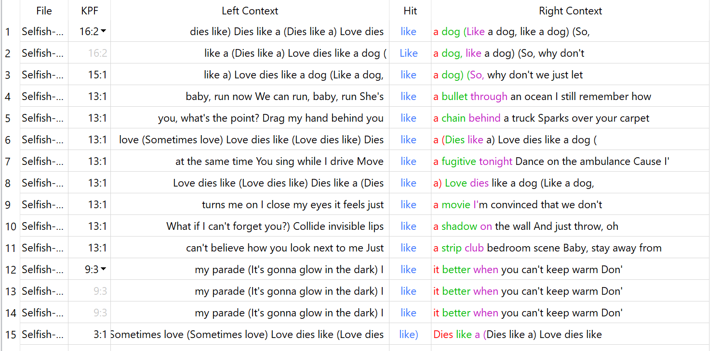
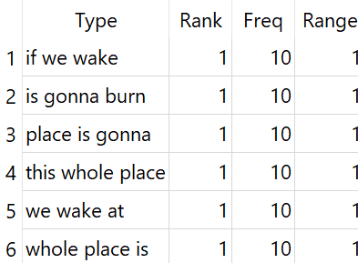
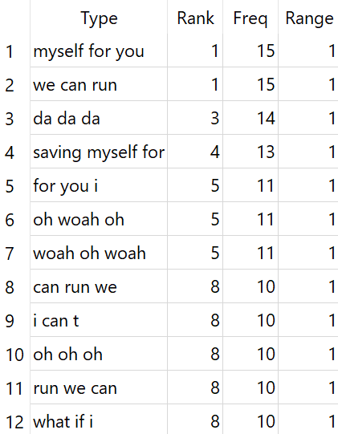
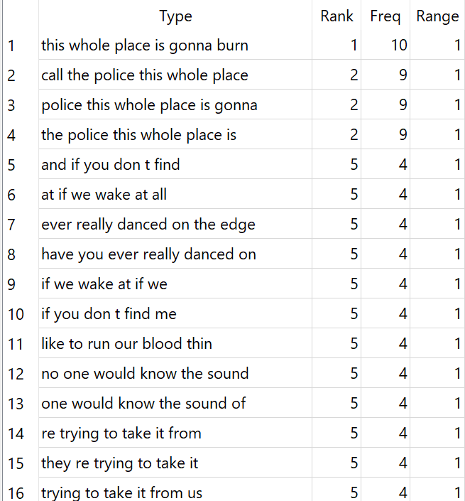
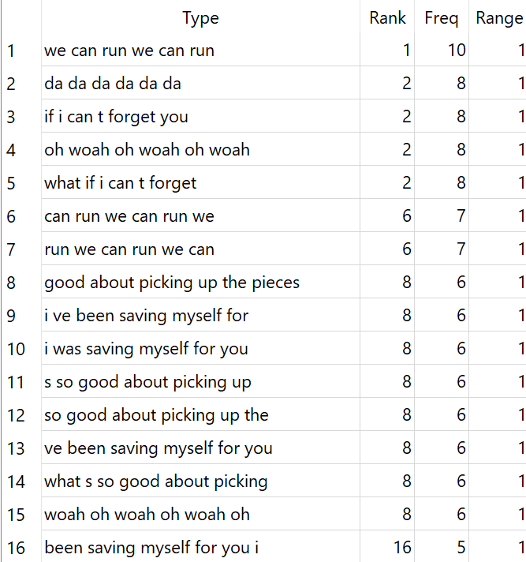

In addition to Voyant Tools, I used AntConc to perform a more detailed analysis of the lyrics from A Flair for the Dramatic and Selfish Machines. AntConc is a corpus analysis tool that makes it possible to examine words and phrases in their surrounding context, identify recurring patterns, and track how specific language is used throughout a text.
While Voyant Tools provided visual summaries of frequently used words, AntConc allowed me to look more closely at how those words function within the lyrics themselves. By examining concordance lines and recurring phrases, I was able to gain a better understanding of the language patterns that appear across both albums.

The first set of visualizations examines the word "like" within each album. AntConc's concordance feature displays every occurrence of a selected word alongside the words that appear immediately before and after it. This allows patterns in usage to become much easier to identify.
For both A Flair for the Dramatic and Selfish Machines, the concordance results show that the word "like" appears in a variety of lyrical contexts. By displaying multiple examples side by side, AntConc makes it possible to compare how frequently the word appears and how it is incorporated into different phrases throughout the albums.
Viewing these concordance lines together provides more context than a simple word-frequency count. Rather than only knowing that a word appears often, the concordance viewer reveals how the word is actually being used within the lyrics and whether similar language patterns occur repeatedly.


The next visualization focuses on the most frequently occurring three-word phrases within each album. To keep the results manageable, only phrases that occur ten or more times were included.
In A Flair for the Dramatic, several recurring phrases appear repeatedly throughout the lyrics. Many of these phrases are connected to specific songs, which explains why they appear so frequently within the dataset. Because song lyrics often include repeated choruses and refrains, certain word combinations naturally occur much more often than others.
A similar pattern can be observed in Selfish Machines. Several three-word phrases appear at high frequencies, indicating that particular lyrical passages are repeated throughout the album. These recurring phrases help illustrate how repetition contributes to the overall structure and vocabulary of the songs.
Analyzing repeated phrase groups adds another perspective to the data. Instead of focusing on individual words, phrase analysis highlights combinations of words that regularly appear together, providing additional insight into the lyrical patterns present within each album.


The final visualization examines the most common six-word phrases found within the lyrics. Unlike the three-word phrase lists, these longer phrases provide more complete pieces of lyrical content and offer additional context for recurring language.
Within A Flair for the Dramatic, the most common six-word phrases are largely associated with repeated lines, choruses, and memorable lyrical passages. Since longer phrases are less likely to occur by chance, their repetition often reflects sections of songs that are intentionally emphasized by the songwriter.
The same trend appears in Selfish Machines, where several repeated six-word phrases occur multiple times throughout the album. These longer sequences reveal recurring lyrical structures and make it easier to identify passages that receive particular emphasis within individual songs.
Examining six-word phrases helps bridge the gap between word-level and song-level analysis. While single-word frequency lists reveal commonly used vocabulary, longer phrase patterns provide a clearer view of how that vocabulary is organized into complete lyrical ideas.